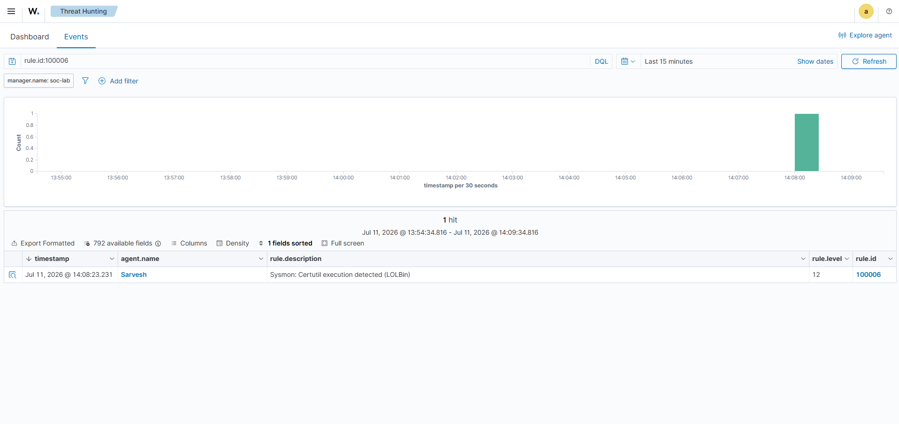
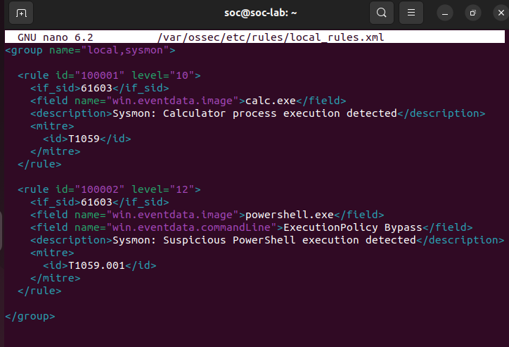
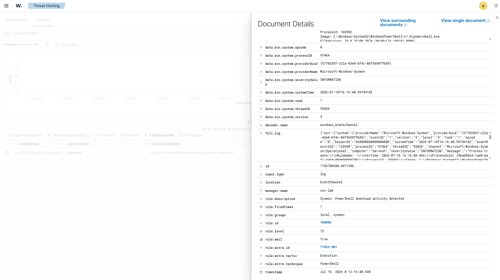
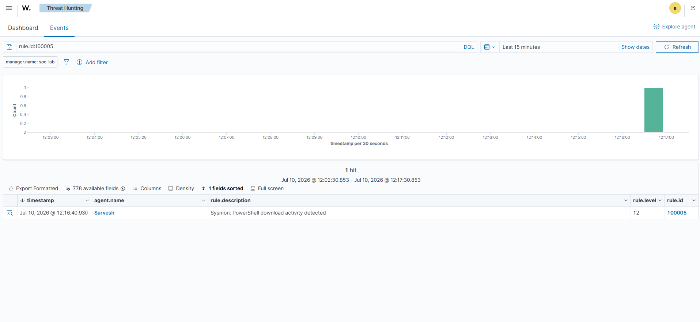
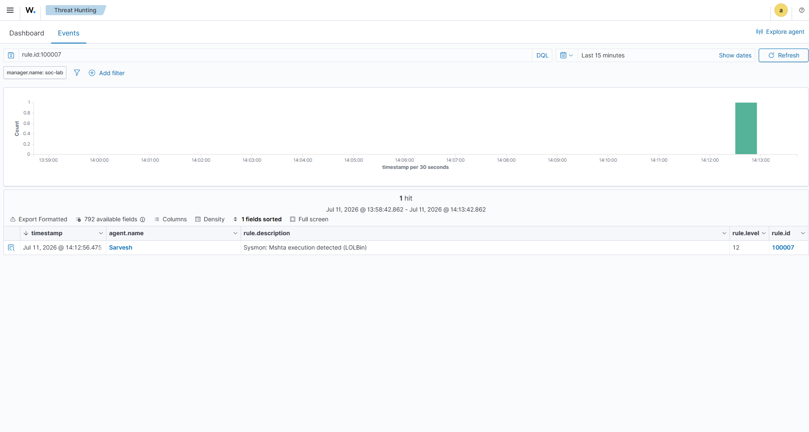
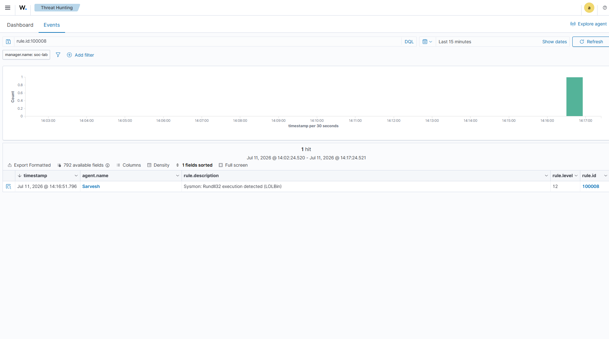

SOC
Engineering Report
Technical documentation covering the design, implementation, testing, and investigation workflow of the SOCForge home lab.
Project Objective
SOCForge is a simulated Security Operations Center environment built to demonstrate endpoint monitoring, threat detection, incident investigation, and adversary simulation.
By implementing open-source security technologies, this lab replicates the operational lifecycle of an enterprise SOC. I engineered a pipeline to ingest unstructured endpoint logs, normalize the telemetry, trigger correlated alerts, and map adversarial behavior directly to the MITRE ATT&CK matrix.
Detection Engineering Process
01
Attack Simulation
Controlled adversary techniques are executed against the Windows endpoint.
02
Telemetry Collection
Sysmon and Wazuh agents collect endpoint activity.
03
Rule Development
Custom detection rules are created to identify malicious behavior.
04
Investigation
Alerts are analyzed and mapped to attacker techniques.
Security Stack
SIEM/XDR platform used for alert generation and monitoring.
Windows telemetry collection for process and activity visibility.
Framework used for classifying adversary techniques.
An isolated host-only network topology configured to safely simulate malicious behaviors without risk of external exposure.
Lab Evidence
Screenshots, alert captures, dashboards, and investigation artifacts collected during SOCForge testing and attack simulations.
Wazuh Dashboard & Agent Information
Proof of active endpoint monitoring, telemetry collection, and Wazuh environment configuration.


PowerShell Detection Engineering
Detection of suspicious PowerShell activity through Sysmon telemetry, Wazuh rules, and MITRE ATT&CK mapping.



Phase A Attack Chain
Reconstruction of the initial adversary workflow including hidden PowerShell execution and download activity.


Phase B Attack Chain
Analysis of living-off-the-land techniques involving Windows utilities and execution methods.



Investigation Findings
SOCForge successfully demonstrated a complete detection engineering workflow, from adversary simulation to alert investigation and evidence collection.
- Successfully detected administrative privilege bypasses and obfuscated scripts by analyzing Sysmon Process Creation (Event ID 1) telemetry forwarded to Wazuh.
- Reconstructed complete multi-stage execution paths, tracing how malicious processes initiated remote outbound connections to pull downstream payloads.
- Mapped distinct adversarial actions (such as LOLBin manipulation) to specific MITRE ATT&CK techniques, proving coverage across Defense Evasion and Execution tactics.
- Developed and validated highly targeted XML detection rules to filter out baseline noise while successfully catching malicious runtime arguments.
Future Improvements
- Expanding simulations to cover registry-based persistence and credential dumping techniques (e.g., LSASS parsing).
- Developing custom active-response scripts to automatically isolate compromised endpoints upon high-severity alerts.
- Integrating open-source threat intelligence feeds (MISP/OTX) directly into the Wazuh pipeline for automated IOC matching.
- Transitioning custom detection rules into a GitOps workflow using a Sigma-to-Wazuh compilation pipeline.